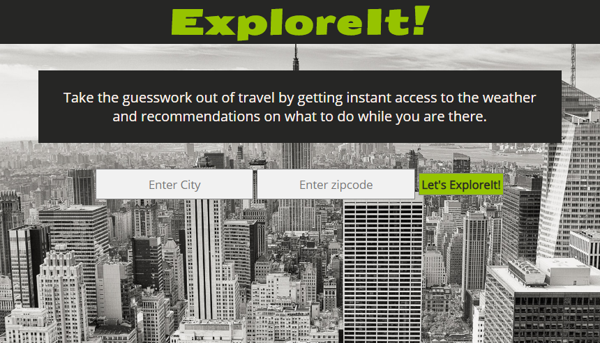

About Me

Hi! My name is Yajaira Flynn-Corbin. How you pronounce that you ask? Ja-hi-ra. I'm a web developer in training.
I am a full-time Web-Development student at Thinkful. I love coding because it allows me to be creative. I am a frequent flyer on YouTube, where I like to watch videos on new coding methods and even current ones since I am still learning. I surround myself with other "techies" to listen to intelligent conversations about the tech community.
When I am not coding, I am busy being a mother and wife. My family and I are active and are firm believers in exploring new things. We enjoy kayaking, hiking, mountain biking, snowboarding, the list can go on and on. My hunger and inner nerdiness truly enjoy learning new things. This is why the tech field excites me so much because it's constantly changing keeping my appetite for learning fully.
My Project
Salsa Quiz App
This is to measure and teach prospective salsa students about salsa dancing. Many people are interested in many different arts of dancing but often hold back because of the false information they have heard or hesitate because they don't know or understand what it takes. This app introduces new prospective students about the very basics of salsa dancing.
Technologies used to create the app: HTML, CSS, jquery.

ExploreIt! App
Help users access current weather data to their travel destination by entering city name or zipcode using the Open Weather Map API while also using Yelp Fusion API to provide recommendations for restaturants and other exploration opportunities all in one app.
Technologies used to create the app: HTML, CSS, JavaScript, jquery.
My Contact Information
I am currently looking for employment. Please use any of the links below to contact me directly.